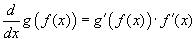

This device cannot display Java animations. The above is a substitute static image
1. Composition of a line and parabola
Here, f (x) = 2x, g (x) = x2, and h (x) = g (f (x)). The graphs are shown in purple, and each has a tangent line (hard to see for f, because f is also a line). On the graph of f (on the left) you will see a red square (which is draggable) and a red line. The length of the red line represent the x input to f, and the green vertical line represents the y output of f.
Since f is the inner function of the composition, the green y output of f becomes the x input for g, and you can see a green horizontal line on the middle graph showing the x input for g (these two green line segments should be the same length, if you have equalized axes). The graph of g also shows a blue vertical line segment which represents the y output of g.
The right hand graph shows the composition. Here, the x input is the original red input to f, and the output is the blue output of g. Click the "Equalize Axes" button, then move the slider and notice how the colored line segments illustrate the composition process.
On this same example, also notice that the slope of the tangent line is shown in the upper right corner of each graph. What do you notice about the relationship between the slopes of the tangents to f and g, and the slope of the tangent to the composite function? Move the slider and see if your conjecture holds.
2. A line and exponential function
Select the second example from the drop down menu, which changes g to an exponential function. Does the relationship between the slopes that you noticed above still hold? Examine some of the other examples in the drop down menu, which use different functions for f and g.
General principle
Hopefully you saw that the slope of the tangent for the composite function was the product of the other two slopes. The slope of the tangent in the first graph is just f '(x), but notice that the slope in the middle graph is being evaluated at a different place (i.e., not at x but at y = f (x)). The slope in the middle graph is g ' (f (x)). Multiplying these two gives the shortcut for finding the derivative of a composite function, called the chain rule:

You can think of this rule as a process: multiply the derivative of the outside function (leaving the inside function alone) by the derivative of the inside function.
Other differentiation topics
(C) 2011 Copyright Math Open Reference.
All rights reserved